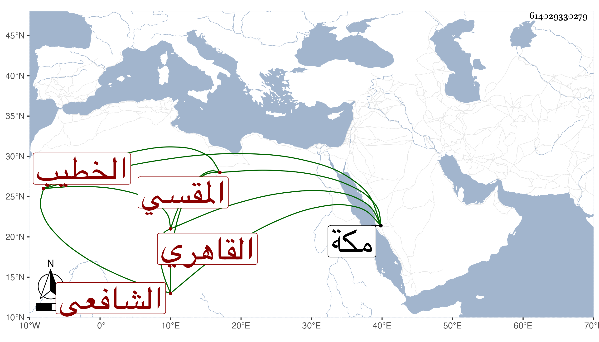

0902Sakhawi.DawLamic.ITO20230111-ara1.EIS1600.614029330279
Biography ID: 614029330279
إبراهيم بن محمد بن إبراهيم بن أحمد برهان الدين بن شمس الدين القاهري المقسي الشافعي الخطيب سبط الفقيه عثمان القمني الآتي ويعرف كأبيه بابن الخص حفظ القرآن وغيره واشتغل عند شيخنا ابن خضر وسمع الحديث على شيخنا وغيره وتنزل في صوفية البيبرسية وغيرها من الجهات بل خطب بجامع ساروجا وغيره وتكسب بالشهادة كأبيه بحانوت التوبة وغيره وكان لا بأس به حج مرارا آخرها في سنة ثلاث وسبعين وجاور فسقط عليه بيت سكنه بمكة في جمادى الأولى سنة أربع وسبعين فمات تحت الهدم شهيدا وأظنه جاز الخمسين رحمه الله ورأيت لأبيه سماعا لمجلس الختم للدارقطني على الأبناسي والغماري والشمس الحريري إمام الصرغتمشية والفوى وأحمد بن عبد الله بن رشيد السلمي الحجازي والزين بن النقاش وذلك في سنة خمس وتسعين وسبعمائة فيشار إليه في ترجمته من المحمدين .
